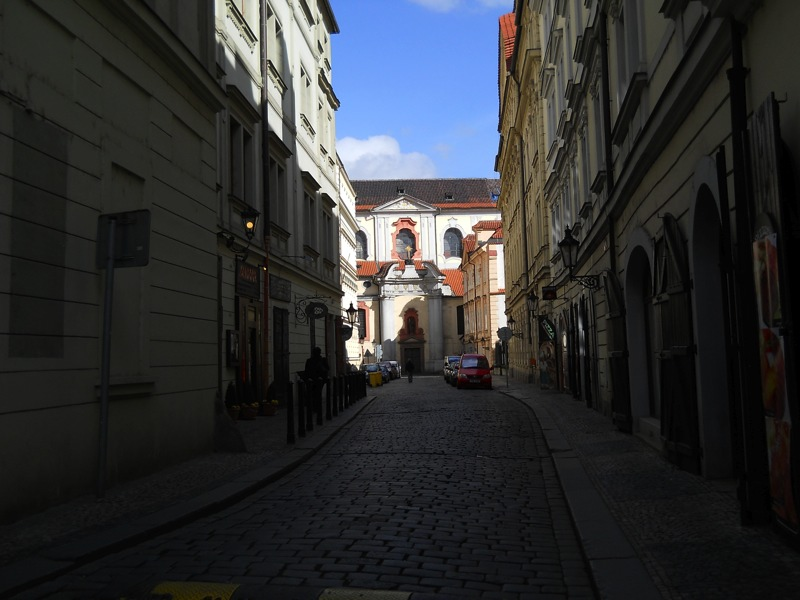
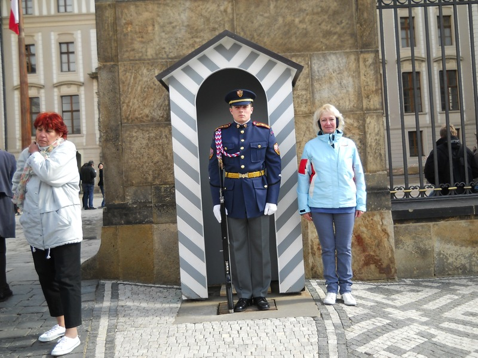
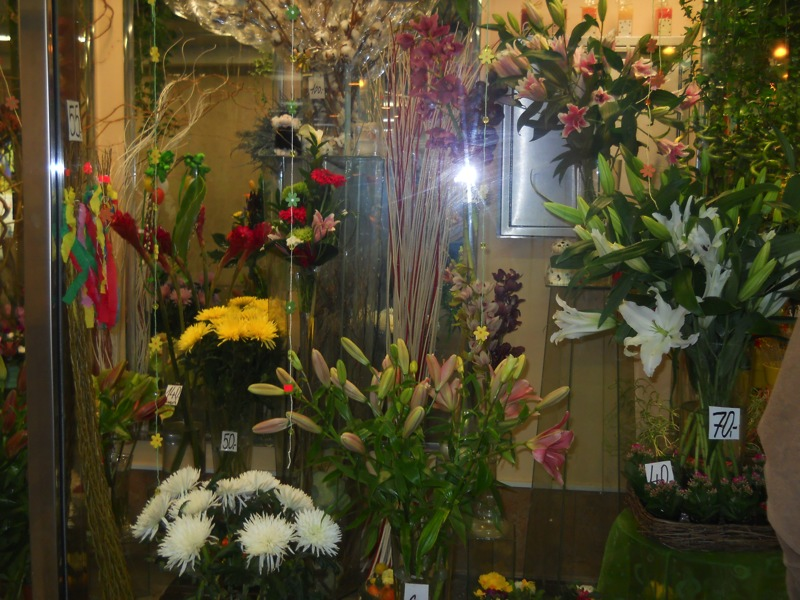
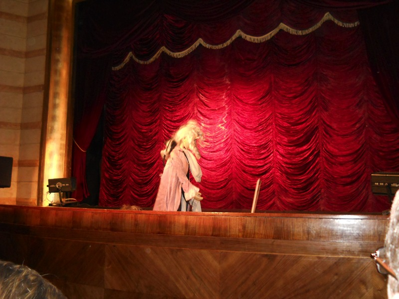
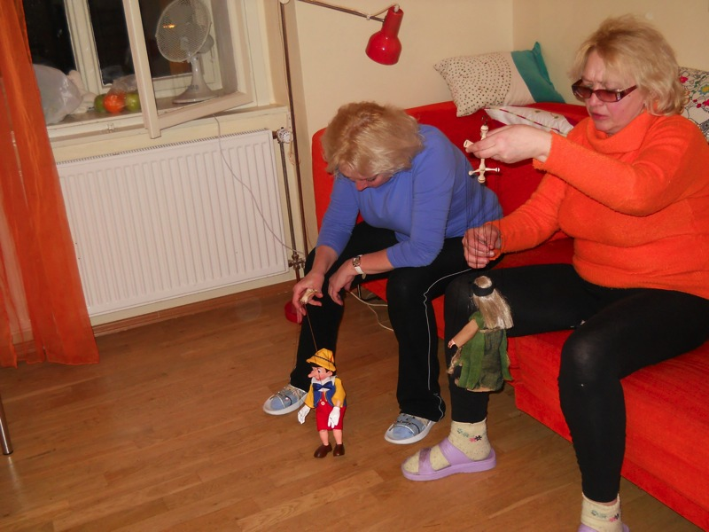

Prague, March 2010
Welcome to Prague, a medieval-themed, touristy city with castles, puppetry, fun little souvenirs, and meat and potatoes.
I settle into the holiday apartment we rented and practice Russian on my computer. At this point, I've been studying with tutors for a year. Aliona speaks English, Russian and Belarusian, while her mother and aunt (who were going to stay with us) speak Russian and Belarusian. So you see how I might have been nervous. I was determined to communicate with them on my own in some way.
Here's a view of the street outside our apartment. We were situated close to the Charles Bridge.
We met Aliona's mother and aunt, Marina and Valentina, at the train station. It was a heart-warming reunion, as Aliona misses her family and home a great deal since her asylum years ago.
Marina works as a florist and has a great appreciation for flowers. She brought these for Aliona, and here they're set up for display in our shared apartment.
This vacation convinced me that we should never, when possible, rent a hotel room. The apartment was cheaper, much roomier, and had all the facilities of home. No annoying housekeeping to worry about when sleeping in. Plus, Aliona's relatives were cooking for us frequently, so we were very well fed.
The apartment was fairly trendy-looking too. This was our main bathroom.
Valentina sporting her version of the 'fro. While looking at this photo, I initially thought this was Marina. Identical twins should wear clearly visible nametags for photos.
Enough dilly-dallying. Time to get ready to explore Prague.
The most recognizable tourist site in Prague is the Old Town Square, complete with the astronomical clock. Aliona introduced me to her "top 10" travel guides she likes buying. Here she reads one for Prague.

The Old Town Square was full of snacks, including these cylindrical treats which was basically sugary dough wrapped around a log and slow-roasted.
If you touch this donkey, you'll be required to admit it later on your customs form.

European buildings always look haunted at night.

We arrive near the Charles Bridge, at the Vltava River.
Here we block other tourists and locals from enjoying their day.
A statue of Jesus's feet adorns the Charles Bridge.
Further down was a statue of St. Arithmetic holding a golden plus sign.
We were eventually pushed aside by people we were blocking. We rested a while to recover.
Aliona's mother and aunt are identical twins. You can tell they certainly are different, but they're both goofy.
A statue of Jesus was mounted above the statue of Jesus's feet.
Here's a view of the Prague Castle, the Vltava River, and the side of the Charles Bridge which wasn't under construction.
The ones on the right are tourists heading to the Prague Castle. Those on the left are heading to the Old Town Square.
Renovation can be beautiful.
On the Prague Castle-side of the Charles Bridge, tourists passed through an archway that makes you feel like a knight approaching the castle.
Marina wanted to be a knight too.
Prague is known for its beautiful garnet jewelry, but garnets are red. So these are just nice-looking pendants made of something else.

They still look cool. After watching this swirl around mystically for a while, a ghost appeared and scared us off.

Any street you photograph in Prague will look distinctly European.
Where there were beautiful flowers, there was Marina. I particularly like the happy sunflower man.
We had our share of stairs to climb approaching the Prague Castle.
Lots of stairs and a brick wall made a good spot to advertise our jeans.
These stairs taught me that Marina is in very good shape.
Here we brought the citizens of Prague to tears with our masterful tango.
After Aliona emigrated to the US, she saw her mother only one other time, and she was very ill. I made sure she was very healthy for this trip. See the results here.
She appreciated my thoughtfulness.
She also appreciated the location. Aliona has been to Prague before, but it's a gorgeous city that I personally couldn't get enough of.
Marina and Valentina took frequent smoking breaks, but only outdoors.
I believe in point and shoot cameras being better-suited for vacations than high-end DSLRs. It takes away from the enjoyment of the vacation if you have something heavy strapped around your neck all the time. Also, point and shoot cameras these days are capable of taking very impressive pictures, especially if you know how to work with their limitations.
Street performers in Prague are pretty classy.

Marina makes fun of this poor guard outside of Prague Castle.

The guard, basking in embarrassment, is also forced to endure me and Aliona.

This too would look haunted at night.
Here are the ghosts.
The courtyard of Prague Castle was perfect for skateboarders. In fact, we saw one little boy on a scooter zooming around, having the time of his life.
St. Vitus's haunted cathedral was largely ignored by the boy on the scooter.

At times, we just rested on benches. This was one of those times.
Marina rests as well, which was rare.
Valentina takes a picture of something very high.
Crown jewels on display in Prague Castle.
Aliona defies the Czech Republic's rule of law.
The numbers on these books reminded me of the Dewey Decimal system.
This was the dining room in our apartment.
We took a chance and tried playing the pipe organ. The ghosts of St. Vitus's cathedral rattled their chains at us until we stopped.
The queens of Prague castle enjoyed overlooking their subjects.
Every so often something flashy seems to deserve a picture. Speaking of flashy, I think I accidentally used it on this.

Near the castle was Prague's "Golden Lane", filled with everything Prague is known for, except for big impractical things like Old Town Square and the Vltava River.
A medieval knight certainly can find some deals on outfits in the Golden Lane.
This shield is undamaged because the severed lion head scares off attackers very effectively.
We figured the spiked chair would look good in our living room, so we had it shipped home.
Prague is also famous for colorful window displays.
Marina liked taking pictures of goofy things like rope-legged mice and bunnies.
Aliona buys another souvenir. We figured it would look good next to our spiked chair.
Outside of a medieval-themed restaurant, this prisoner struggles for survival.
Heeeelllllp meeeee...
We finished up and as we were returning across the Charles Bridge, we saw this little marionette rocking out beneath the shadow of a street performer.
The horse-drawn carriage was the most popular form of transportation in Prague, before the advent of cars.
I exclaimed "Klyuchi!" to Aliona's relatives, which means "keys". They thought I was crazy until they saw this sculpture I was pointing at, consisting of lots of keys.
More goofy rope-legged statues.
Window shopping is enough reason to visit Prague.
This glass ape bullies the tiny glass pig.
Prague is the place to go for anything theatrical.
This little Satan sculpture is adorable.

The Czech are not shy of eating a lot of meat and potatoes. This is how you advertise to a hungry Czech.
The Prague streets were never boring.
I spent ten minutes taking pictures of these fun little sheep, trying to get the best angle possible. This was the winner.
Here's Prague's legendary "Lennon Wall". Aliona thought she was worried when I said, "Graffiti? I don't see any graffiti."
Aliona found out from her mother that there really was graffiti.

It takes something as psychedelic as the Lennon Wall to stand out in colorful Prague.
Aliona takes a momentary rest from punching me in vengeance to pose for another picture.
Padlocks symbolize a couple's love.
Aliona did not see the creepy screwed-up head baby statue about to crawl over her.
A bird waits for a tourist to drop something tasty.

We stop in a grocery store and this dead fish poses for a close-up.
Here's our group ordering authentic Czech food. Both Russian and English speakers have little problem communicating in Prague. On a linguistic note, I found my knowledge of Russian let me understand a decent lot of Czech as well.
I never sat still in a restaurant while waiting for my food.
Food in the Czech Republic had a way of getting your attention. "Blah! I'm your food!" My train of thought was gone.
Here was another meal that Valentina put an end to.

I admit I filtered out some of the countless flower pictures Marina was taking. I chose the ones I thought were pretty.
On a similarly crazy note, Marina saw this walking cloud float by and ran quite a distance after it, determined to get a picture.

We had signed up for an authentic marionette show in a historic Prague theater. Wolfgang hosts the show.
This tiny actress's performance was too orchestrated and controlled, and to be frank, even a little stiff.
Little grim reapers spook the stage as the tiny actress gets ready for her next solo. I actually successfully explained some of what was going on in Russian to Aliona's mother during the performance. It was a very rewarding intercultural experience.
I do admire marionette theater because it's very non-pretentious. Everyone, including the performers, are there because they want to be there.
Our souvenir, this shifty little gypsy, liked to kick everyone and everything. It was quite rude, but no one had a clue about why she acted this way.

Pinnochio blamed me, but his nose grew, so no one believed him. We parted ways the next day, and you can imagine the tears of a mother as she says farewell to her daughter. До свидания!
Back